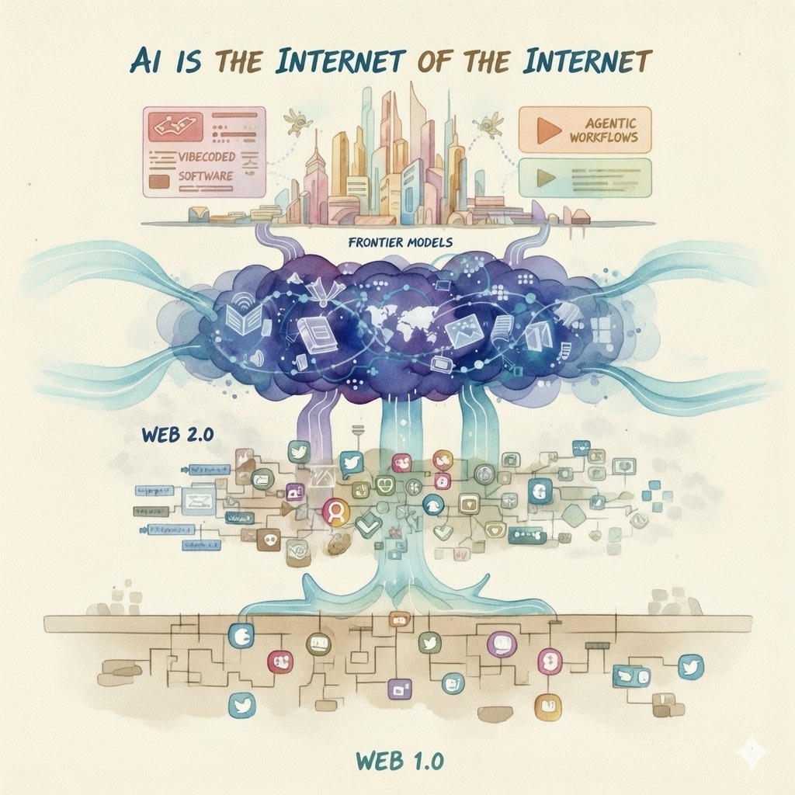

January 16, 2026
Today's smartest AIs were trained on almost every public word, picture, and video ever posted online. They soaked it all up, squeezed it down, and turned it into something new: a living, thinking layer that now sits on top of the original internet. 🧠
This was the early internet (1990s–early 2000s). Websites were mostly one-way: companies or people put up pages for you to read, like online newspapers or catalogs. Famous examples were Yahoo!, AOL, and simple shopping sites.
Starting around 2005, things changed. Now anyone could create and share content. YouTube, Facebook, Twitter (now X), Instagram, and Wikipedia let people post videos, photos, comments, and edits. The internet became a place where users made most of the new stuff.
Giant AI systems (like the ones behind ChatGPT or Grok) were trained on almost everything from the layers below. They read billions of web pages, posts, and pictures to learn patterns. These models squeeze all that information into a super-smart brain that can write, answer questions, and create new things.
Now AI can do even more. "Agentic workflows" mean AI can plan and carry out multi-step tasks on its own—like booking a trip or researching a project. "Vibecoded software" means you can describe the exact look and feel you want in words ("make it cozy and purple with big buttons"), and AI builds custom apps or tools just for you.
The lower layers give AI tons of information to learn from. The AI-layer then creates new content that goes back onto the regular internet. This loop makes everything grow faster, but it can also cause problems1 if too much AI-made content gets mixed in.
AI doesn't replace the old internet. It sits on top of it, uses everything that's already there, and turns the whole thing into something smarter and more active. AI really is the internet built on top of the internet.